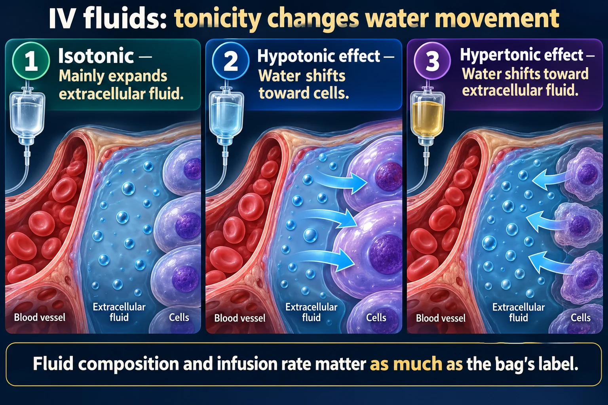

Tonicity of Fluids · Isotonic · Hypotonic · Hypertonic
This page is the BAGS. Six fluids you will hang for the rest of your career — what is dissolved in each one, when you hang it, and when you must never hang it. Normal serum osmolality is 275–295 mOsm/kg; every bag is named by how it compares to that number.
📄 Simple Nursing original — opens in Drive →
Every fluid on this page is just a dot on one number line — where it sits next to 275–295 is the whole story.
Below the band = hypotonic · inside the band = isotonic · above the band = hypertonic. That is the entire naming system.

Fluid composition and infusion rate matter as much as the bag’s label.
Isotonic
Mainly expands extracellular fluid.
Hypotonic effect
Water shifts toward cells.
Hypertonic effect
Water shifts toward extracellular fluid.
Clinical choice
Match the solution to volume, sodium, glucose and neurologic needs.
Monitor
Pressure, lungs, sodium and other electrolytes; watch the rate of correction.
Important nuance
Dextrose-containing solutions may change their physiologic effect after glucose metabolism.
| Term | What it means | Nurse translation |
|---|---|---|
| Osmolarity | Solute particles per liter of solution mOsm/L — what's printed on the bag | The bag's number |
| Osmolality | Solute particles per kg of water mOsm/kg — what the lab reports | The patient's number, 275–295 |
| Tonicity | The effective pull on a cell once the fluid is in the body | Which way the water actually moves |
📈 Quick bedside estimate: serum osm ≈ 2(Na) + glucose/18 + BUN/2.8. Sodium is doing most of the work — which is why every fluid on this page is described by its salt.
Same concentration inside and outside the cell — so the fluid stays in the blood vessel and fills the tank.
These solutions have a perfect balance (equilibrium) of solutes both inside & outside the cell, therefore no fluid shifts are made. Human blood is isotonic, so very little osmosis occurs — isotonic fluids have the same osmolality as body fluids.
🎯 So where does the fluid go? It stays in the vascular space and expands the blood volume. That is exactly what you want in shock, bleeding and dehydration.
Every one of those is the same problem: the tank is empty — refill the tank.
⚠️ Large volumes deliver a big chloride load → hyperchloremic metabolic acidosis, and can push a heart-failure or kidney-failure patient into overload.
⚠️ It contains potassium → caution in renal failure / hyperkalemia. It contains calcium → never run with blood products (calcium + the citrate anticoagulant = clot). Liver failure can't convert the lactate.
Isotonic in the bag (252) · HYPOTONIC in the body. The dextrose is metabolized by the cells within minutes, and what is left behind is plain free water — which then rushes into the cells.
So when do you hang it? To give free water and calories, to dilute IV medications, and to treat hypernatremia. ❌ Never in head injury, stroke, or raised ICP — free water goes straight to swelling brain cells. ❌ Not the fluid for resuscitating shock.
Other FVO tells: crackles in the lungs 🫁 · bounding pulse 💓 · JVD 🦒 · dependent edema 🦵 · dyspnea · sudden weight gain — 1 kg = 1 L of fluid.
👀 Highest-risk clients: heart failure, kidney failure, older adults, infants.
Weaker than the cell — so water leaves the vessel and moves INTO the cell, fattening it like a hippo.
These solutions have a LOWer osmolarity & LOWer concentration of solutes than body fluids. They cause the movement of water INTO cells by osmosis, swelling the cells like a BIG fat hippo — and therefore should be administered SLOWLY to prevent cellular edema.
🎯 Job: rehydrate the CELL, not the vessel. This is the fluid for cellular dehydration.
🐢 Give SLOWLY — on a pump, and reassess neuro status.
Cells everywhere swell, but the one that matters is the brain cell, because the skull cannot expand. Cellular edema → cerebral swelling → ↑ICP.
❌ NOT for clients with increased ICP, head injury, stroke, or neurosurgery — you would be pouring water onto a swelling brain.
❌ Also not for burns, trauma, third-spacing or liver disease with low albumin — the fluid leaks straight out of the vessel. ❌ Not for hypotension/shock: it does not stay in the tank.
Thick, salty, concentrated — it drags water OUT of the cells and into the vessel, and the cells get skinny.
These solutions have a HIGHER osmolarity & HIGHER concentration of solutes than body fluids. They are very thick salty solutions with more solutes & less water, causing water to be moved OUTSIDE the cells and making the cells skinny like a hyper person.
🎯 Job: pull water back into the blood vessel. Volume goes up fast — which is exactly why it is the most dangerous family on this page.
1️⃣ FLUID VOLUME OVERLOAD (FVO) — you just pulled a large volume into the vessel.
2️⃣ CELLULAR DEHYDRATION — you just emptied the cells.
🐢 Safety rules for 3% NS: infusion pump only, frequent serum sodium checks, hourly neuro checks, and — because it is a vein irritant — a central line is preferred in most facilities. Correct sodium slowly; over-fast correction risks osmotic demyelination. ❌ Never bolus 3% NS and never hang hypertonic fluid in heart failure or kidney failure without a specific order.
One table, one decision tree, and the never-list that shows up on every exam.
| 🦛 HYPOTONIC | ⚖️ ISOTONIC | 🏃 HYPERTONIC | |
|---|---|---|---|
| Osmolarity | <275 | 275–295 | >295 |
| Water moves | Vessel ➜ into cell | Nowhere — no shift | Cell ➜ out to vessel |
| Cell becomes | Swollen 🦛 (may lyse) | Unchanged 🙂 | Shrunken 🏃 (crenated) |
| Classic bags | 0.45% · 0.33% · 0.225% NS | 0.9% NS · LR · D5W | 3% NS · 5% NS · D10W · D5NS · D5½NS · D5LR |
| Hang it for | Cellular dehydration · Na >145 | Hypotension · hemorrhage · blood · DKA · HHNS | Hypovolemia · third-spacing · cerebral edema · severe ↓Na |
| Never for | ↑ICP · head injury · burns · shock | Uncontrolled FVO · (LR: liver/renal, blood) | Heart failure · kidney failure · dehydrated cells |
| Biggest danger | Cerebral edema 🧠 | FVO → HTN crisis | FVO and cellular dehydration |